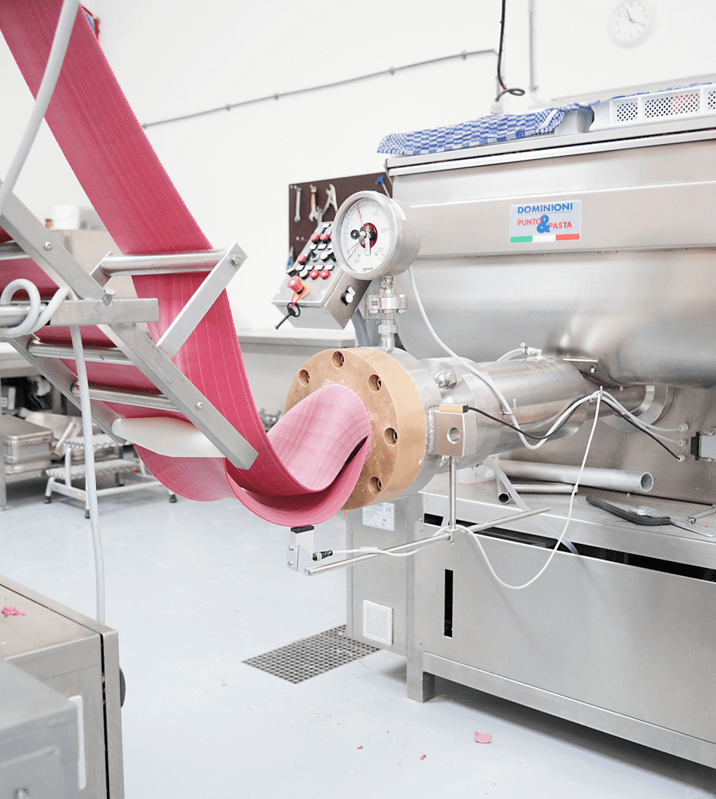

Manager Spaghetteria Amsterdam Jan Hanzenstraat
Spaghetteria Amsterdam Jan Hanzenstraat is op zoek naar een ervaren restaurant manager.
Mail onsIn Italië is het begrip spaghetteria een op zichzelf staand fenomeen. Een plek waar lokale chefs niets anders doen dan het bereiden van verse pasta. Bij Spaghetteria is dit niet anders. Ook wij wijden ons aan de kunst van het pasta maken. Dat doen we in ons eigen laboratorio artigianale, een ambachtelijke werkplaats waar we geheel volgens de traditie van het Italiaanse pastagilde verschillende soorten pasta’s maken. Elk met zijn eigen vorm, oorsprong en bereidingswijze.
’s Avonds bereiden onze Italiaanse chefs de dagverse pasta in zes verschillende gerechten op het dagelijks wisselende menu. Zoals ze dat hun leven lang al gewend zijn. Uit de pannen komen gerechten die recht voor hun raap zijn en hun oorsprong vinden in traditionele receptuur op basis van verse producten. Gerechten zoals ze in de spaghetterie van Italië zelf ook worden opgediend. Vol smaak en zonder poespas.
Deze onbevangen manier van koken weerspiegelt zich ook in de bediening en sfeer van Spaghetteria. Met enthousiasme, gastvrijheid en een tikkeltje Italiaanse branie serveren jonge mensen de gerechten uit in een levendige omgeving. Of je nu urenlang wilt tafelen of zin hebt in een snelle, smaakvolle maaltijd, iedereen schuift bij elkaar aan. Aan een van de grote tafels of aan een hoge bar. En na het eten is er altijd nog tijd voor een tiramisù met een espresso of een huisgemaakte sgroppino of limoncello
Van oudsher heeft vrijwel elk Italiaans dorp een laboratorio artiginale, een ambachtelijke werkplaats waar enkel en alleen pasta wordt vervaardigd. De laboratorio's zijn het kloppend hart van de Italiaanse eetcultuur, kleine pasta-ateliers waar de lokale artigiano niets anders doet dan in een wolk van bloem en pasta maken. Dag in, dag uit. Vroeger met de hand tegenwoordig met machines om het werk te versnellen. De traditie van het Italiaanse pastagilde schrijft voor dat verse pasta met twee soorten bloem en verse eieren wordt gemaakt. Die bloem moet van hoogwaardig kwaliteit zijn, op kleine schaal worden geproduceerd en bij voorkeur biologisch zijn. Zo niet dan verliest de pasta haar absorberende werking en kan ze, eenmaal in de pan, se saus niet goed opzuigen. En wat is pasta zonder saus? Precies.
Ook bij Spagetteria maken we verse pasta in ons eigen laboratorio. Geheel volgens traditie werken we met twee soorten bloem afkomstig van kleinschalige producten uit Toscane en Umbrië en gebruiken we alleen maar verse schaaleieren. De hele dag door gaan de verschillende pasta soorten door de handen van onze eigen artigiani. Met een enkel doel: het maken van de perfecte, verse pasta.
Aangezien we bij Spaghetteria met een dagelijks wisselende kaart en meerdere vestigingen werken, staat er op onze site geen voorbeeld van het menu. Toch geven we je graag een idee van wat je kunt verwachten. Van de zes gerechten op de kaart zijn er drie die dagelijks variëren: de vegetarische ravioli, de vispasta en de pappardelle met vleesragout. Daarnaast staan er drie vaste waarden op het menu: de arrabbiata, de Toscaanse worst en de Frutti di mare (mits in het seizoen; zo niet worden deze vervangen door mosselen). De prijzen van de gerechten variëren tussen de tien en zestien euro.
Pasta bevat tarwe en tarwe bevat gluten. Onze huisgemaakte, verse pasta bevat daarom vanzelfsprekend ook gluten. Toch is het bij Spaghetteria mogelijk om glutenvrije pasta te eten. Alle gerechten op het menu, op de ravioli na, kunnen dan ook in een glutenvrije variant worden geserveerd. Ook in het geval van een lactose-, noten- of andere allergie, blijven er genoeg mogelijkheden over om een lekker bord pasta te eten. Dus heb je een voedselallergie? Geef het door aan de bediening en dan zoeken we samen naar een oplossing. En voor onze veganistische gasten: de glutenvrije arrabbiata zonder kaas bevat geen dierlijke producten.
Wil je pasta koken, pasta serveren, pasta rondrijden of zelfs pasta maken in onze laboratorio? Bij Spaghetteria zijn we altijd op zoek naar goede, leuke en enthousiaste mensen die bij ons willen werken. Mail je C.V, foto en introductie naar vacature@spaghetteria.com en je krijgt direct reactie.
Spaghetteria Amsterdam Jan Hanzenstraat is op zoek naar een ervaren restaurant manager.
Mail onsVoor onze vestigingen in Amsterdam zijn wij opzoek naar leuke en ambitieuze restaurant managers & assistent managers.
Mail onsVoor onze vestigingen in Rotterdam zijn wij opzoek naar leuke en ambitieuze restaurant managers & assistent managers.
Mail ons